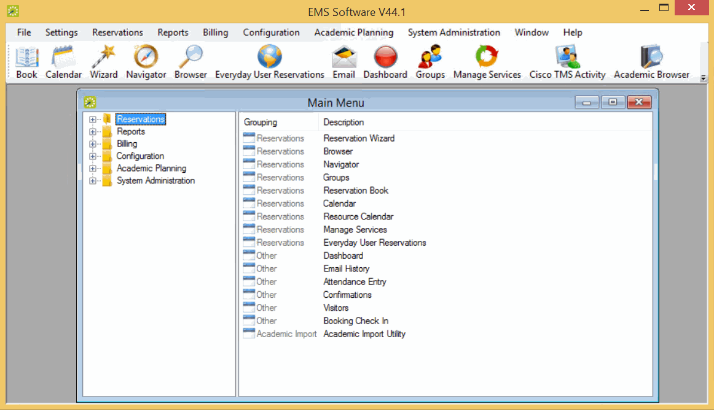

Access the EMS application in either of the following ways:
- On your desktop, double-click the EMS icon.
- Open the Windows Start menu, in the Search field, enter EMS and then select the EMS option.
If you are the first person to log in to the EMS application at your organization, a dialog box opens where you enter the information for the login server and database that your application is accessing. (These are set up during implementation.) After you enter this information, the EMS Login dialog box opens.

EMS Login Dialog Box
As the EMS Administrator, enter “admin” in both the User ID and Password fields, and then click OK. If this is the first time that your EMS application has been accessed at your organization, a Registration dialog box opens. You must import the license file (License.lic) that was provided with your EMS software to register your application.
-
To import the license file, see Import Registration Information.
-
To continue without importing the license file, go to Step 3.
Click OK. The EMS application opens. The main menu is open in the application.

Main Menu Dialog